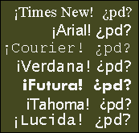
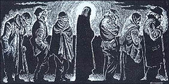
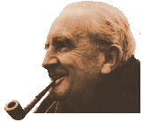

"Tuve hambre y no me diste de comer"...
Mañana es la colecta anual de
Cáritas Argentina.
También se puede donar a través de la página, cajeros, teléfono, etc.
 Tipografías de segunda.
Más o menos cuidadas, las tipografías True Type, pero cuando se trata de
de caracteres para uso de los "extranjeros"... ahí ya no importa tanto.
¿Nadie habrá explicado a los diseñadores tipográficos (especialmente
a los de la Verdana, pero también a la Futura, y Tahoma) que
el primer signo de admiración debe extenderse abajo de la base (baseline)?
¡Queda espantoso!
Y lo mismo para el signo de interrogación.
¿A quién hay que quejarse?
-
Aún puedo sentir una momentánea satisfacción ante obras como
El médico rural, suponiendo que
todavía me sea posible escribir algo parecido (muy improbable).
Pero felicidad... solamente si consiguiera elevar el mundo hasta lo puro, lo verdadero, lo inmutable.
anotación del Diario, 25 sept. 1917;
tres semanas antes le diagnosticaban tuberculosis
. . . . . . . . . . . . . . . . . . . . . . . . . . . . . . . .
-
Sensación de pureza, certeza sobre sus motivos. Aspecto de los niños, especialmente
una niña (postura erguida, cabello corto y negro), y otra (rubia, rasgos indefinidos, sonrisa
indefinida), la música alegre, los pasos en marcha.
La sensación de alguien que se encuentra en apuros, y el socorro llega, pero él no se alegra de ser rescatado -y no lo rescatarán-, sino de ver que llegan otras personas, más jóvenes, más confiadas, dispuestas a proseguir la lucha, en verdad ignorantes de lo que ésta significa, pero con una ignorancia que no inspira desesperación en el espectador, sino asombro, alegría, lágrimas...
(Kafka muere el 3 de junio de 1924)
-
El día en que murió Paulo Coelho
se escuchó de los sabios un gran ¡ay!;
mas no se lamentaron de esa muerte,
sino de que quedó Jorge Bucay.
Recordando aquella vez que vi a Salgán, cuando acaso descubrí lo que era aplaudir al artista, con entusiasmo y gratitud ... (yo venía de recitales de Charly y Spinetta... donde uno trataba de convencerse de que disfrutaba; aplausos de compromiso -ante uno mismo sobre todo, y ante el mismo público también). Y recordando algún viejo post sobre el aplauso; pienso:...
<cynical_mode>
Después de todo, ¿qué es eso del aplauso? Lo que sucede entre el artista
y su público, no es algo similar a una transacción comercial, acaso ? Yo le pago
(la entrada) para que me entregue algo (algunos minutos de diversión, de deleite para
los oídos, los ojos, o lo que sea).
Cuando lo que me entrega satisface mis deseos, cuando me gusta, yo aplaudo,
es decir: doy mi aprobación, y le sugiero que quiero más de eso...
</cynical_mode>
Prefiero pensar que esta mirada es estúpidamente reduccionista, como la mayoría de las
miradas cínicas. Y ciertamente, cualquiera que haya aplaudido con ese entusiasmo-gratitud
alguna vez, sabrá reconocer la bajeza de esos modos de mirar...
El aplauso auténtico es muchísimo más que una señal de aprobación;
yo no le estaba diciendo "eso me gusta, seguí así"; más bien estaba diciendo
algo como "gracias" y "me alegra que existas, me alegra esa belleza que
hacés"; (y no para mí). El "no te mueras nunca!", también es una expresión
adecuada, aunque parcial.
¿Por qué "gracias"? ¿Qué hay que agradecer? -dirá el cínico. El artista no me está
haciendo un favor, no hay sacrificio ni generosidad personal en lo suyo, simplemente está
cumpliendo su trabajo (mejor o peor).
Oscuramente, sin embargo, sabemos que está bien agradecer; sabemos que
el mérito de lo que el artista hace no puede medirse con parámetros mercantiles; que no
le agradecemos porque "nos" da algo bello, sino porque simplemente "hace"
algo bello; y frente a ese misterio, la relación artista-público tiene poca importancia.
Y por eso mismo, tiene sentido agradecer; y amar. (que no otra cosa significa
el "me alegra que existas", "no te mueras nunca").
Pero, ¿es que son tan especiales los artistas, para hacer y merecer semejantes cosas ? Parece demasiado estético eso ... qué nos queda a los pobres extranjeros del Arte ?
Acaso, en otro plano, todos somos, o debemos ser artistas. Ojalá esta noche, antes de dormirme, pueda ser digno de recibir ese aplauso, por la buena actuación del día. Ojalá alguien esté alegre de que uno exista, no por un intercambio de favores y de gustos recibidos, sino sólo por haber hecho belleza y bien.
"Fulano es un personaje", se escucha por ahí. Generalmente, hay un fondo de aprecio en la expresión; sentimos que es bueno (para el universo, no para nosotros) que fulano exista. Eso, que sólo presentimos impuramente, pobremente, parcialmente, Dios lo dice (o lo quiere decir) de cada uno.
Dice nadakedecir
"Y entonces me acordé de cuando enterramos a mi hermano, y estaba toda la
gente allí, y por un segundo, todo fue posible, y mi hermana aplaudió, y aplaudimos todos."
No puedo decir que, en general, el aplauso me parezca siempre una expresión adecuada
para esa gratitud; sobre todo, porque muchas veces se mezcla con lo social
(aplaudir para oírnos aplaudir) y porque a veces disuena con sentimientos que piden
recogimiento y silencio... pero esto depende de las circunstancias.
En ese caso, bien puedo creer que fuera la expresión justa...
Y por eso, pienso, la Iglesia siempre festeja a los santos en el aniversario del día de su muerte, no en el del nacimiento (cumpleaños). Esto, que los idiotas de las revistas tildarán (pensamientos automáticos) de "necrofilia", es una forma de ese aplauso -alegre, cómo no!- cuando cae el telón, cuando termina el recital.
Ciclo de tango gratis, los viernes de junio, a las 21, en el Auditorio de la Sociedad de Distribuidores de Diarios, Revistas y Afines, Avda. Belgrano 1736.
Dice Clarín:
-
El ciclo se cerrará [el viernes 28 de junio]
con la participación de Horacio Salgán y Ubaldo De Lio, más que un dúo,
una orquesta de dos.
Salgán al piano y De Lio en guitarra, han producido una suerte de alquimia, de magia medieval, solo propia para músicos de altísimo nivel, que cuentan, además, con la fermentación del trabajo conjunto por más de cuarenta años. Ese conocimiento integral de la idea del otro, permite inenarrables réplicas, siempre novedosas, como si cada tango fuera un juego musical para sorprender con complicidad. Inútil buscar réplicas: Salgán-De Lio no tienen antecesores ni continuadores, pertenecen a una especie musical que se alimenta con su propia genialidad.
La sola presencia en el escenario de Horacio Salgán garantiza el espectáculo. Esa suma de destellos lo convierte, probablemente, en el músico contemporáneo más importante para el género ...
En nadakedecir* hay un texto con jugo:
-
La vi a ella conversando con esa señora sentada en el piso junto a unos papeles desparramados, allá, muy lejos, a la entrada de esa enorme sala vacía.
Y pensé en llamarla adonde estaba yo viéndola, para que se viera, tan linda, a sí misma conversando con esa señora, y supe un segundo después de pensarlo, que era rematadamente imposible para nosotros compartir esa hermosa imagen.
Tenemos prohibido vernos desde otra parte, y para simular ese imposible es que se inventaron el espejo, la foto y el cine
-
¡Pobre amada!, no sabe que le cierra
la gloria toda dicha; excepto en el reflejo
que le da la falsía del espejo
no verá a la mujer más bella de la tierra
-
_ No hay motivo para el miedo en este pequeño objeto; más bien para la alegría.
¿Qué hay de terrible en él ?
_ Cosas que son dos cuando son una -replicó la Dama con decisión. Esa cosa -señaló el espejo- es yo y no es yo.
_ Pero si no miras, nunca sabrás lo hermosa que eres.
_ Se me ocurre, Extranjero, que un fruto no se come a sí mismo, y un hombre no debería estar acompañado por él mismo.
_ Un fruto no puede hacerlo porque es sólo un fruto -dijo el Anti-Hombre-. Pero nosotros podemos. A esto lo llamamos espejo. Un hombre puede amarse a sí mismo y estar acompañado por él mismo. Eso es lo que significa ser un hombre o una mujer: caminar junto a uno mismo como si fuera una segunda persona y deleitarse en la propia belleza. Los espejos fueron creados para enseñar ese arte.
_ ¿Es bueno? -dijo la Dama.
...
-
Todos los movimientos "naturales" del alma están regidos por leyes análogas a la gravedad. La única excepción es la gracia.
...
La miseria de nuestra condición somete a la naturaleza humana a una gravedad moral que la atrae continuamente hacia lo bajo, hacia el mal, hacia una sumisión total a la fuerza.
"Dios vio que los pensamientos del corazón del hombre tendían siempre, constantemente al mal."
Esta gravedad es lo que obliga al hombre, por una parte a perder la mitad de su alma, según un proverbio antiguo, el día en que se convierte en esclavo, y por otra a dominar siempre, según las palabras citadas por Tucídides, allí dónde tiene poder.
Como la gravedad propiamente dicha, tiene sus leyes. Cuando se las estudia no somos nunca demasiado frios, demasiado lúcidos, demasiado cínicos.
En este sentido, en esta medida, hay que ser materialista.
Pero un arquitecto estudia, no sólo la calda de los cuerpos, sino también las condiciones de equilibrio. El verdadero conocimiento de la mecánica social implica el de las condiciones en que la operación sobrenatural de una cantidad infinitamente pequeña de lo puro colocada en un punto conveniente, puede neutralizar la gravedad. ...
Too much...
La yanqui webloggera de relapsed catholic me cansó, como me cansaron varios de estos conservative christians...
Aire
Too much odio contra el islam.
[*]
[*]
[*]
[*]
[*]
Too much defensa de Israel, como si fuera su propia patria (uno de estos "weblogs católicos"
tenía en la portada dos banderas : la de EUU y la de ... el Vaticano ? no: la de Israel); y too much militancia anti-antisemita.
[*]
[*]
[*]
[*]..
Too much odio contra la izquierda liberal progresista y defensa del partido.
Too much política,
en el peor sentido de la palabra, en el sentido carnal de la palabra, para sitios
que pretenden ser cristianos.
Too much pasión colectiva, y esa militancia terrenal de puños apretados,
tan ignorante de la elegancia, de la humildad ... y del sentido del humor (como otros cuantos de por acá: sean "nacionalistas
católicos" o "revolucionarios de izquierda").
Too much gravedad y too little gracia.
(¿estoy siendo demasiado duro ? De eso se trata. Se trata del lado malo que veo o creo ver en ese ambiente; sus lados buenos, ya los dije, y los sigo viendo)
Mañana, primer viernes de junio, es la fiesta del Sagrado Corazón de Jesús (devoción bastante maltratada en la iconografía tradicional, pero eso no debería importar mucho.. o no?).
En Argentina, este año va a pasar más desapercibida (aún) que en otros años.
Vaya pues una oración de Juan Pablo II...
-
Se adelantó un maestro de la Ley. Había escuchado la discusión, y se quedaba admirado de cómo Jesús les había contestado. Entonces le preguntó: «¿Qué mandamiento es el primero de todos?»
Jesús le contestó: «El primer mandamiento es: Escucha, Israel: El Señor, nuestro Dios, es un único Señor. Amarás al Señor, tu Dios, con todo tu corazón, con toda tu alma, con toda tu inteligencia y con todas tus fuerzas. Y después viene este otro: Amarás a tu prójimo como a ti mismo. No hay ningún mandamiento más importante que éstos.»
El maestro de la Ley le contestó: «Has hablado muy bien, Maestro; tienes razón cuando dices que el Señor es único y que no hay otro fuera de él, y que amarlo con todo el corazón, con toda la inteligencia y con todas las fuerzas y amar al prójimo como a sí mismo vale más que todas las víctimas y sacrificios.»
Jesús vio que ésta era respuesta sabia y le dijo: «No estás lejos del Reino de Dios.» Y después de esto, nadie más se atrevió a hacerle nuevas preguntas.
Al final salió el Mozilla 1.0, salió.... Alegría de muchos ... Por mi parte... lo bajaré y veremos. En principio, todo el proyecto éste me suena como un gigantesco fracaso del desarrollo de software; no podés demorar tanto en sacar la versión 1.0 de un browser. Gracias a esa demora, hoy M$IE es el browser, te guste o no... Y hay que decirlo: es un buen browser.
Pero ... we'll give it a try.
Unas "madres" (encabezadas por la loca furiosa que todos sabemos) "tomaron" la Catedral para protestar por "la situación de hambre que viven los chicos de este país".
Ah.
Bueno...
Me parece que es otro hambre es que les preocupa. Y en verdad, con payasadas como estas, sólo ese hambre pueden llegar a calmar: el de "salir en los medios"...
Y si de paso molestamos a los curas y a los chupacirios ... miel sobre hojuelas.
A propósito de lo de Jesús : "Tuve hambre y no me diste de comer..." : yo estaba armando una especie de listado de las muchas maneras que tenemos los hombres de esquivarle el bulto al deber de dar de comer al hambriento, manteniendo la ilusión de ser gente "solidaria y comprometida"... Reconozco mi falta de imaginación: lo de tomar una Catedral jamás se me hubiera ocurrido...
Y hoy mismo, en los pasillos del subte en Facultad de Medicina, había un pibe tocando una suite para cello de Bach. Un soplo de aire fresco (en el subte).
Esas suites de Bach son bellísimas.
Y -con perdón de la gastada observación- no deja de ser enternecedor, imaginarlo a Bach, componiendo sus temitas para que en el 2002 lo escuchemos en un subte de Buenos Aires... Es alentador ver cómo a veces, a pesar de todo, el bien (o la belleza, es lo mismo) le gana al mundo.
-
...el consuelo de estos cuentos, la alegría de un final feliz o, más acertadamente,
de la buena catástrofe, el repentino y gozoso «giro» (pues ninguno de ellos tiene auténtico final),
toda esta dicha, que es una de las cosas que los cuentos pueden conseguir extraordinariamente
bien, no se fundamenta ni en la evasión ni en la huida.
En el mundo de los cuentos de hadas (o de la fantasía) hay una gracia súbita y milagrosa con la que ya nunca se puede volver a contar. No niegan la existencia de la discatástrofe, de la tristeza y el fracaso, pues la posibilidad de ambos se hace necesaria para el gozo de la liberación; rechazan (tras numerosas pruebas, si quieren) la completa derrota final, y es por tanto evangelium, ya que proporciona una fugaz visión del Gozo, Gozo que los límites de este mundo no encierran y que es penetrante como el sufrimiento mismo. ...
Estuve recién en la Biblioteca del Congreso, hojeando unas revistas Humor, del año 1987.
Me asombró comprobar cuánto recordaba de esas lecturas de mis 20 años; cuán sedienta estaba la tierra, para que pudiera así absorber tanta porquería. Montones de chistes, dibujos, textos, frases, que -ahora descubro- todavía tengo fielmente archivadas en el cerebro... (qué cosa rara la memoria... verdad es que yo tengo memoria libresca, solamente). Notable.
Y, sin embargo, al releer todo eso, la impresión de suciedad y tontería ha sido mucho más fuerte que la que imaginaba o recordaba...
Me vinieron a la mente dos mayúsculas y arbitrarias barbaridades, que me divierte estampar acá:
- La revista Humor tiene la culpa de todo.
- Yo a los 20 leía eso con fe; cuatro años después la había vomitado completamente (y sin mucha ayuda que digamos): ergo, no hay que desesperar.......
(Acaso no sean tan barbaridades ... pero, eso sí, habría que tomarlas en el adecuado plano de analogía, que el perspicaz lector sabrá discernir).
... y no son escrúpulos, le juro.. Años de viajar en colectivo (ahora, subte) y de fijarme en los libros que otros leen... Y, si se trata de algo de Coelho, Bucay, Buscaglia: descalificación y desprecio automáticos e inapelables. Y campanear si el lector/a tiene tanta cara de gil como el material que lee...
Y se ve tanto material para el desprecio: Rayuela, de Cortázar; le Monde Diplomatique; Saramago; el libro de le Monde Diplomatique sobre Saramago ("soy un comunista visceral") ; Mario Benedetti : Eduardo Galeano ...
Por suerte, últimamente lo más leido en el subte parece ser "El señor de los Anillos".
Algún día, para mortificarme un poco, tengo que llevarme un libro de Bucay al subte, y leerlo con expresión admirada, y marcando partes con resaltador fluorescente... Es poco probable, igual, que exista algún pasajero que me esté despreciando por eso, pero me basta (me sobra) con imaginarlo...
Pasando hoy al mediodía por mi antiguo barrio, me asomo a los puestitos de libros usados de la plaza de la Facultad de Medicina (qué difícil es escribir en español sin abusar de la palabra "de") .
La pregunta de siempre, un poco molesta para uno:
_ ¿Buscabas algo?
_ Nada, mirando nomás...
Pero la chica que venía atrás mío dice:
_ Algo de metafísica, ¿tenés?
A mí me habría desorientado un poco el pedido, pero el librero conoce su oficio. Duda un segundo (y quizás, examina la cara de la lectora) y :
_ Metafísica... algo tipo conde de Saint Germain ?
_ Sí...tenés ?
Yo también tomo una instantánea de la cara de la metafísica y la agrego a mi álbum . Y mientras espero el subte "D" me siento levemente culpable...

Cristo en la cola de los indigentes. (the breadline)
Hoy y acá, (Buenos Aires, año 2002) acaso habría que pintar
a Jesús buscando comida en las bolsas de basura.
"Tuve hambre y no me diste de comer..."
Mt 25:42
{kind=link}
Me entero de la existencia de un (exitoso, segundo de ventas después de Harry Potter en Inglaterra ) "anti C. S. Lewis".
Todo es deliciosamente como debe ser: dice que la obra de Lewis es racista, misógina y propagandísitica (propaganda de cristianismo, se entiende); dice que hoy no es posible creer en un Dios bueno y en un cielo...
-
In Pullman's world, the universe is ruled by a senile, viciously sadistic deity who has to be deposed in battle so that its inhabitants can join with angels in creating a "republic of heaven".
-
"When it was possible to have a belief about God and heaven, it represented something we all desired. It had a profound meaning in human life.
"But when it no longer became possible to believe, a lot of people felt despair. What was the meaning of life? It seems that our nature is so formed that we need a feeling of connectedness with the universe. If there is no longer a king, or a kingdom of heaven, it will have to be a republic in which we are free citizens. We ourselves as citizens have to build the republic of heaven."
Ayer, tomando un café para hacer tiempo en el bar de la facultad, veo en los televisores mis primeras escenas del mundial.... (no es que no me guste el fútbol -aunque tampoco me vuelve loco-, es que no tengo tv). Y lo que me toca ver es justo la actuación de Rivaldo y la expulsión del turco... Es tener mala suerte, supongo...
Esto ya lo leí en algún lado...
La Nación (quizás por su condición de advenediza del progresismo) suele traer unas notas culturales de una "idiotez ideológica" incurable. Hoy tenemos una nota a Isabel Parra y León Gieco.... artistas del palo si los hay.
No hablamos, pues, de música; hablamos de militancia, compromiso, coherencia, exilios, etc... y despotricamos contra las fronteras, los militares, etc etc etc ...
Dice nuestro gran León
-
"Esto de los límites y las fronteras son cosas que provocaron los militares, pero que no representan a los pueblos. Si uno va a buscar, en su origen esa idea se impuso a través del enfrentamiento del Beagle, durante el 78, que casi nos lleva a la guerra, o de la ayuda militar chilena a los ingleses que generó irritación en su momento. Pero esas cosas no tienen nada que ver con
el sentimiento real de la gente, sino con una propaganda de los poderes y a veces algunos se dejan llevar por esas cosas", aclara Gieco.
Pero esto es de antología:
-
El músico recuerda un hecho particular. Durante un recital en Viña del Mar, un bastión difícil para cualquier artista extranjero, León Gieco hizo una referencia a la Patagonia argentina para presentar el tema "El embudo". En ese momento una silbatina instantánea lo dejó sin aliento. "Pensé un segundo y dije: "La Patagonia no es de los argentinos ni de los chilenos, sino de los mapuches" y recibí una ovación".
Y sigue el discurso (ajeno a todas influencias de la propaganda de los poderes, claro): Dice el periodista, como echando el resto:
-
En la convivencia cotidiana con la militancia, las luchas, esperanzas, los destierros y las divisiones internas de su pueblo...
-
"Su arte es influyente para las nuevas generaciones. Ella demostró el poder que tiene la conciencia del pueblo. No se lo puede acallar matando o persiguiendo a sus cantores. La música y su pensamiento siguen vivos...
Por otra parte, es gracioso que La Nación figure, en muchos esquemas ideológicos que uno oye por ahí, como representante de la derecha (la derecha capitalista, en todo caso). "los de izquierda leen Página 12, los de derecha leen La Nacion"... Es gracioso que ese "esquema", y esta "nota", (sin hablar de aquello de "la propaganda de los poderes") resulten cosas tan naturales, tan sencillas de conjugar a los ojos de casi todos; que nadie vea una aporía en todo esto...
 Poniendo orden en mi caótico disco rígido, backupeando cosas viejas, etc... encuentro viejos mails (tres años, parecen muchos más) de cuando participaba en una lista de correos sobre Tolkien....
Estaba lindo, veo ahora... había buenas discusiones (bastante trigo
entre la paja). Releyendo algunos posts como el par que va abajo, me sorprendo
un poco... por una lado, una especie de pedantería que a mí mismo me choca
(y que supongo que debo mantener, uno siempre cambia menos de lo que cree)
y a la vez un esmero, un trabajo y una -mentirosa pero bastante bien fingida-
erudición... Me hace un poco de gracia también; y otro poco de nostalgia:
. . . . . . . . . . . . . . . . . . . . . . . . . . .
Date: Sun, 14 Mar 1999 17:09:56 -0300 To: tolkien@aldebaran.netverk.com.ar Subject: [Tolkien] Re: Elfos y hombres Dijo Pedro: > 1) yo no veo que de la Atrabeth se deduzca necesariamente una > encarnación de la divinidad sensu cristiano. > 'deducir necesariamente' es mucho decir ... Por otra parte: Una cosa es lo que Finrod tenía en mente cuando decía lo que dijo, y otra lo que Tolkien tenía en mente cuante escribía lo que escribió. Para mí, de la Athrabeth se puede deducir claramente la catolicidad de Tolkien, no la catolicidad de Finrod :-) Imposible sería que Finrod pensara en la Encarnación de Cristo, no? La cuestión es que, al parecer, pensaba en algo-así-como-una encarnación-de-Dios ... y esto es suficiente para que a mí (y, si no entendí mal, también a Diego) me parezca un poco fuerte ... por no decir demasiado. Finrod maneja el 'concepto' (aunque sea vago) de la encarnación, lo que puede tenerse por la revelación. Tenemos, además, que Tolkien era conciente de que meterse a meter la Encarnación en su obra 'era demasiado' .... ¿Se le fue un poquito la mano entonces ? No sé. Puede ser. > 2) la idea de "fin del mundo" asociado a una "redención", aunque > pueda faltar en los filosófos griegos, no es exclusiva del > cristianismo. Su presencia en la obra de Tolkien, dado que éste > conocía de sobra la mitología nórdica, no tiene porqué ser una > consecuencia de su catolicismo. No tiene necesariamente que ser una consecuencia. Está bien ... a priori. Pero yo no hablaba de ese dato específico, sino más bien de la Athabeth, en general, y del asunto de la redención-por-la-encarnación, en particular. Sabemos que la Athrabeth no es un trozo de mitología 'existente' sino una obra de un escritor europeo del siglo XX. Y yo creo que, por más mitologías que un escritor conozca, nunca habría escrito la Athrabeth de no ser personalmente católico. No estoy hablando de calidad literaria. Digo que la metafísica, la antropología y la teología que hay ahí es (buena o mala) católica. Recalcaba Khamul: >Y nos hallamos ante una mitología Sí (en el sentido ser de algo que no tiene ni tuvo existencia real en el mundo 'primario'). Pero ... es una mitología ? Si lo es. de un tipo especial, me parece a mí (que no conozco nada de mitologías), una mitología creada por una sola persona. que nunca fue alimentada por las tradiciones y la sabiduría de un pueblo, y nunca fue creída, ni vivida por hombres vivos, (salvo, claro, en el sentido en que una obra de arte es creída y vivida). En qué sentido (pregunto a los que han estudiado mitologías) puede la obra de Tolkien ser considerada una mitología y estudiada como tal ? Hay algún otro caso parecido en la historia ? Podría haber sido creada esta obra en otro siglo que no fuera el nuestro ? Preguntas, solamente. >Los elfos tienen su principio y fín bien definidos. Para mi han sido >creados como oposición a la maldad de Melkor (como se ve en el >ainulindale) con la función de "destruirle". Así pues cuando en la >Ultima Batalla Morgoth es definitivamente eliminado su función acaba. >Ya han cumplido con lo que Eru quería de ellos. Muy sugerente, esto. Pero no lo veo claro. Para empezar, habría queaclarar en qué sentido los elfos son "la contra de Melkor"; después de todo, ese papel estaría más bien para los Valar; y en la Ultima Batalla son los Valar, no los Elfos, los que triunfan; arreglando así el desastre en que los mismos Elfos se habían metido al enfrentar a Melkor. No es muy evidente para mí que los Elfos hayan cumplido lo que Eru quería de ellos. Otro (no yo) podría decir lo contrario: que los hombres vienen para un deseperado 'segundo round'. En este sentido (en estas cosas las analogías saltan por todos lados) podría comparar a los Elfos con Adán y Eva que son puestos en el Edén (pero en un Universo ya caído) , para sentar una plaza fuerte para enfrentar al enemigo y 'cultivar' (sanar) la tierra; pero, a la primera tentación, ellos también caen ... (etc...)
. . . . . . . . . . . . . . . . . . . . . . . . . . .
Date: Thu, 18 Mar 1999 09:27:36 -0300 To: tolkien@aldebaran.netverk.com.ar Subject: Re: [Tolkien] Sobre el Unico Luis wrote: > Leyendo los ultimos mensajes (y releyendo algunos viejos), volvio > a mi mente una pregunta que rondaba hace tiempo en mi cabeza. > Que es lo que entienden ustedes por "reclamar el Anillo para uno"? > Obviamente, es mucho mas que ponerselo en el dedo y decir "es > mio", como hace Frodo en el Monte del Destino, o como dice > Gollum continuamente. > Me pregunto esto porque siempre se refieren al miedo de Sauron > de que alguien "lo reclame para si", ya sea Gandalf, Saruman, o > quien sea. > > Otro tema... > Hace ya bastante, se hablo de que solo Gandalf (y solo despues > de su "resurreccion", cuando ya era el Blanco) podia reclamar el > Anillo y derrotar a Sauron. Porque es esto? Porque no Saruman o > Elrond o algun otro elfo poderoso (Glorfindel, Galadriel). > Me parece que están conectadas las preguntas. Por un lado, Sauron era un Maia, un ser superior (por naturaleza) a elfos y hombres. Por otro lado, el anillo había sido hecho por él y para él. Los otros anillos eran 'para' elfos/hombres/enanos, este no; este le queda grande a cualquier elfo que pretenda 'reclamarlo' en lugar de su hacedor. La naturaleza del anillo es un tema complejo, y no tengo tiempo (ya) para citas. 'Reclamarlo' sigifica, par mí, algo así como reclamar el título de señor del Anillo, diría yo, sin mucha claridad ni seguridad. Yo creo (con muchas dudas, y sujeto a correcciones) que, si Gollum no 'reclamó' el anillo, sí lo hizo Frodo, o al menos intentó hacerlo (cuando su voluntad se quebró en el Monte del Destino). Tolkien dice que, aún cuando Frodo lo hubiera efectivamente reclamado y (lo que habría llevado tiempo) dominarlo, Sauron lo habría enfrentado igual, y lo habría aplastado. Como decía la cita que mandé hace poco, Gandalf sí podría haberlo hecho; él podría haberse convertido, de haber tenido la voluntad, en el señor del Anillo, desplazando a Sauron. > Por que a Sauron el Unico no lo vielve invisible como al resto?. En > ningun momento dice que lo haga o no lo haga, pero yo supongo > que si Elendil y Gil-Galad se pueden enfrentar a el es porque lo > ven, con el Unico en su mano y todo!! Pero es solo una supocicion > mia. No sé. Es probable, para mí, que Sauron no fuera invisible con el anillo; algunas posibles explicaciones: Por una parte, Sauron es un ser 'accidentalmente' encarnado; su cuerpo es (en cierto sentido) un ropaje ajeno. Por otra parte, así como el efecto de invisibilidad era distinto respecto de los videntes 'torcidos' (los sometidos al anillo, digamos) que veían al portador; así también puede suponerse que el efecto sería distinto para un portador que domina al Anillo. Y finalmente, saliendo del mundo secundario, podemos decir que la invisibilidad es un efecto que tolkien metió en el Anillo cuando escribió el Hobbit, y no era consciente de su verdadero poder (al lado del cual, lo de volver invisible parece un poco infantil y discordante). Pero supongo que estas cuestiones pueden aclararse mejor (como de costumbre) yendo a los textos de Tolkien.
. . . . . . . . . . . . . . . . . . . . . . . . . . .
... y todo es vanidad y correr tras el viento...Los diarios cuentan el pequeño escándalo rioplatense, gracias a un presidente (uruguayo) deslenguado y poco prudente, y unos periodistas orientales casi tan vivos como nosotros los argentinos.
Desde ya, el periodista está siempre exento de toda culpa (a nadie se le pasaría por la cabeza plantear eso) y por encima de esas normas éticas que se aplican a los meros humanos. El tipo logró joderlo a su presidente, ensuciar un poquito las relaciones con un país vecino, y tener repercusión en los medios ... qué otro criterio se puede pedir de lo que significa "ser un buen periodista".
... y cuando pasó el tiempo, alguien se preguntó, adónde fue a parar el Frepaso, y para qué sirvió. Una respuesta podría ser acaso este proyecto de ley. Una respuesta más bien simbólica; y más bien del espíritu del asunto. Y también, con sólo ver (o imaginar, que no hace falta mucha imaginación para eso) el apoyo instintivo y de ceños fruncidos de los lectores de Página 12 hacia esta "iniciativa", también puede servir para ver cuál fue su la raíz de su "fuerza".
El odio demoníaco (en el sentido dostoyevskiano de la palabra); y suicida. (no sabemos ni queremos amar ni construir -a lo sumo imaginar utopías, más alienantes que la misma religión; lo que sí sabemos es odiar y destruir lo dado).
Y es doblemente significativo (sea casual o no) que este proyecto se esté tratando en el momento en que el país se está cayendo a pedazos.
-
Según se reveló, la Legislatura de la Ciudad de Buenos Aires está por discutir el proyecto por el que se cambiaría el nombre al Puerto de la Ciudad mediante el expediente 3482-D-2000, propuesto por la diputada del FREPASO Sandra Dosch.
[...]
ponerle al Puerto de Buenos Aires, el nombre de “Ingeniero Huergo”, suprimiendo el de Santa María
No deja de romperme las bolas la última frase
-
Según las organizaciones católicas el acto “excede el marco local en que pretende resolverse, pues trastoca la historia de la Patria y sepulta los valores que la fundaron”.
La traducción siempre es cosa controvertida; y cuando se trata de la Biblia, más; y cuando se trata de estos tiempos políticamente correctos, más todavía ...
Debaten si es correcto lo que propone de una de las traducciones (al inglés) más conocidas, de reemplazar (en algunos casos) la expresión "los judíos" (the Jews) por "los líderes del pueblo judío" (the Jewish leaders).
Para los que pasamos demasiado tiempo tipeando, y empezamos a sentir dolores en las manos: una serie de ejercicios para que el teclado de la PC no termine estropeando la salud.
O, para el quiera probar otra cosa (y gastar u$s 275) un teclado ergonómico (pero "de verdad", según dicen...).
- ¿Por qué preocuparme?
No es asunto mío pensar en mí; yo debo ocuparme de pensar en Dios.
Es El quien se ocupa de pensar en mí.
. . . . . . . . . . . . . . . . . . . . . . . . . . . . . . . . . .
-
¿Qué me importa a mí de mí?
Me importa el nombre del Mayor Artista
y la gloria de Dios, Sumo Poyecta...
Si muero miserablemente aquí
hay una falla en su creación perfecta-
mente vista
por lo cual moriré en forma correcta.
.. o resucitaré como un patí
en el río del Rey de Reconquista.
-
...
Descontento de todos y descontento de mí... ¡cómo quisiera conseguir algo de orgullo y libertad del silencio y la soledad de la noche!
¡Almas de los que he amado y cantado, dadme fuerzas, sostenedme, alejad de mí la mentira y las emanaciones infectas de la humanidad!
Y tú, Señor Dios mío, dame la gracia de hacer versos bellos, unos versos que me demuestren a mí mismo que no soy el último de los hombres, que no soy inferior a los que desprecio.
Charles Baudelaire
("A la una de la madrugada" , fragmento;
de "Pequeños Poemas en Prosa")
Tendría que ponerme a corregir los parciales, pero ... qué pocas ganas!...Y eso que tengo poquitos alumnos.
It's sooo boring... , decía Tolkien... Tengo en algún lado un video de una entrevista (quick time, unos 10 Mb, si no recuerdo mal) donde contaba cómo nació El hobbit... ( ah, acá está)
Tolkien estaba harto de los exámenes, tenía una pila de hojas todavía por corregir, y cuando agarra uno... encuentra que el alumno había dejado la hoja en blanco. ¡Glorious!, se dijo, contentísimo (nada que corregir) y medio automáticamente escribió en la hoja: In a hole in the ground there lived a hobbit.
La palabra se le ocurrió en el momento, y sólo días después empezó a imaginar qué podía ser ese hobbit...
Yo no voy a encontrar ningún examen en blanco. Y si lo encontrara, no creo que se me ocurriera nada interesante para escribir...
Después de los domingos de Pentecostés y de la Trinidad, hoy se celebra Corpus Christi : la fiesta del cuerpo y sangre de Cristo..
En ACI, un especial dedicado a la Eucaristía.
En Zenit, las palabras del Papa hoy.
En encuentra.com,
un texto sobre la historia de la celebración.
Y vaya también un fragmento de una famosa carta de San Justino (mártir cristiano muerto en el año 165, bajo el imperio de Marco Aurelio). La carta, del año 155, es conocida como Primera apología estaba dirigida al entonces emperador Antonio Pío:
-
...
A nadie le es lícito participar en la Eucaristía, si no cree que son verdad las cosas que enseñamos y no se ha purificado en aquel baño que da la remisión de los pecados y la regeneración, y no vive como Cristo nos enseñó.
Porque no tomamos estos alimentos como si fueran un pan común o una bebida ordinaria, sino que así como Cristo, nuestro salvador, se hizo carne y sangre a causa de nuestra salvación, de la misma manera hemos aprendido que el alimento sobre el que fue recitada la acción de gracias, que contiene las palabras de Jesús y con que se alimenta y transforma nuestra sangre y nuestra carne, es precisamente la carne y la sangre de aquel mismo Jesús que se encarnó.
Emily Stimpson (weblog de una católica de eeuu) hizo una especie de encuesta para recolectar "catholic pickup lines" ... acá diríamos algo como "frases católicas para el levante ". Anteayer publicó los resultados, categorizados : los mejores, los peores, los gastados, los desubicados... en realidad casi todos resultan ridículos; pero esa es la gracia, claro está. No son muy aptos para la traducción ... (por el idioma y en parte por la cultura)... pero van algunos, mezclados y adaptados:
- ¿Venís siempre a esta iglesia ?
- ¿Estás de acuerdo con eso de que "es mejor dar que recibir" ?
- ¿Querés que paremos un poquito, y vamos a tomar algo?
(para decir durante una ceremonia con "danza litúrgica") - Creeme: salir conmigo puede resultarte una buenísima mortificación de Cuaresma...
- Disculpame... estoy queriendo rezar un rosario, pero tu sonrisa me distrae... ¿me ayudarías a llevar la cuenta ?
- Estoy tratando de discernir si Dios me llama al sacerdocio o no... me acompañás a caminar un rato ?
- ¿Querés que recemos juntos ?
- No acostumbro a tomar de la mano durante el Padrenuestro, pero con vos no me
pude resistir...
(aparentemente, éste fue real ... y funcionó!) - ¿Alguna vez te dijeron que te parecés a Santa Teresita?
(éste también es real.... y no funcionó. Emily advierte a los hombres: "Ni a la más devota de nosotras le gusta que le digan que se parece a una monja carmelita; no es por nada, pero así es la cosa; lo lamento") - Come on baby light my candle
Muy bueno.